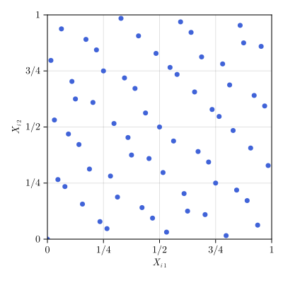
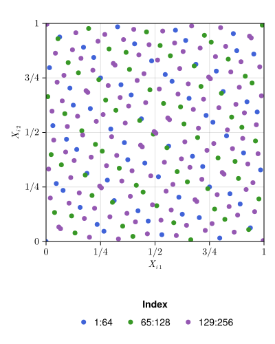
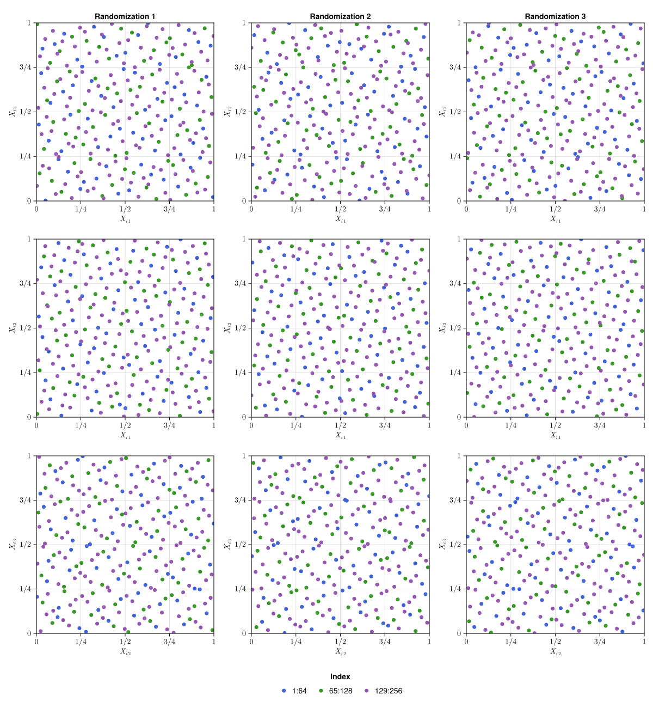

Tutorial
To begin, install this package with
Pkg.add("QMCGenerators")and then import via
using QMCGeneratorsCommon Usage
Often we just want to generate a single randomized quasi-random sequence. For example, to generate the first 4 points of a 3 dimensional digital net with 1 random digital shift with seed 7
Next(RandomDigitalShift(DigitalSeqB2G(3),1,7),4)
# output
4×3 Matrix{Float64}:
0.243795 0.719182 0.810814
0.743795 0.219182 0.310814
0.993795 0.969182 0.560814
0.493795 0.469182 0.0608139A similar API is available for randomly shifted Lattices:
Next(RandomShift(LatticeSeqB2(3),1,7),4)
# output
4×3 Matrix{Float64}:
0.243795 0.719182 0.810814
0.743795 0.219182 0.310814
0.493795 0.969182 0.0608139
0.993795 0.469182 0.560814While not strictly enforced, sample sizes should be powers of two to achieve full coverage of $[0,1]^s$
In the following sections we always supply a seed for reproducibility. Supplying a seed requires you also supply the number of randomizations as done above. However, if you do not wish to seed, you can simply supply the number of randomizations.
rls = RandomDigitalShift(DigitalSeqB2G(12),2)
xs = NextR(rls,2^7)
size(xs)
# output
(2,)size(xs[1]) == size(xs[2]) == (2^7,12)
# output
trueMoreover, you may use only one randomization without a seed with the simplified API
rls = RandomDigitalShift(DigitalSeqB2G(52))
x = Next(rls,2^14)
size(x)
# output
(16384, 52)The same API simplifications holds for Lattices.
Structure and Functions
Unrandomized Sequences
It is highly recommended you randomize sequences. The first point of an unrandomized sequence is $0 \in [0,1]^s$ which will be transformed to an infinite values in many functions e.g. those composed with taking the inverse CDF of a $\mathcal{N}(0,1)$ as done in the section on Quasi-Monte Carlo.
Let's start by defining a 5 dimensional (unrandomized) digital sequence and generating the first 4 points.
ds = DigitalSeqB2G(5)
Next(ds,4)
# output
4×5 Matrix{Float64}:
0.0 0.0 0.0 0.0 0.0
0.5 0.5 0.5 0.5 0.5
0.75 0.25 0.25 0.25 0.75
0.25 0.75 0.75 0.75 0.25We can then generate the next 4 points in the sequence with
Next(ds,4)
# output
4×5 Matrix{Float64}:
0.375 0.375 0.625 0.875 0.375
0.875 0.875 0.125 0.375 0.875
0.625 0.125 0.875 0.625 0.625
0.125 0.625 0.375 0.125 0.125To reset the generator use
Reset!(ds)
Next(ds,4)
# output
4×5 Matrix{Float64}:
0.0 0.0 0.0 0.0 0.0
0.5 0.5 0.5 0.5 0.5
0.75 0.25 0.25 0.25 0.75
0.25 0.75 0.75 0.75 0.25Let's reset once more before continuing
Reset!(ds)
# outputThese functions can also be applied to Lattices
ls = LatticeSeqB2(5)
Next(ls,4)
# output
4×5 Matrix{Float64}:
0.0 0.0 0.0 0.0 0.0
0.5 0.5 0.5 0.5 0.5
0.25 0.25 0.25 0.25 0.25
0.75 0.75 0.75 0.75 0.75Next(ls,4)
# output
4×5 Matrix{Float64}:
0.125 0.625 0.125 0.625 0.625
0.625 0.125 0.625 0.125 0.125
0.375 0.875 0.375 0.875 0.875
0.875 0.375 0.875 0.375 0.375Reset!(ls)
# outputIndependent Sequence Randomizations
Getting a single randomization was shown in the Common Usage section. Support is also available for multiple independent randomizations. For instance, we can generating 2 independent randomizations with seed 11 and get the next 4 points in each sequence via
rds = RandomDigitalShift(ds,2,11)
xs = NextR(rds,4)
typeof(xs)
# output
Vector{Matrix{Float64}} (alias for Array{Array{Float64, 2}, 1})xs[1]
# output
4×5 Matrix{Float64}:
0.58051 0.862848 0.861659 0.919821 0.35264
0.0805097 0.362848 0.361659 0.419821 0.85264
0.33051 0.612848 0.611659 0.669821 0.60264
0.83051 0.112848 0.111659 0.169821 0.10264xs[2]
# output
4×5 Matrix{Float64}:
0.714139 0.702579 0.0130147 0.901326 0.280776
0.214139 0.202579 0.513015 0.401326 0.780776
0.464139 0.952579 0.263015 0.651326 0.530776
0.964139 0.452579 0.763015 0.151326 0.0307758As with unrandomized sequences, we can get the next 4 points and then reset the generator with
xs = NextR(rds,4)
xs[1]
# output
4×5 Matrix{Float64}:
0.95551 0.737848 0.486659 0.0448206 0.22764
0.45551 0.237848 0.986659 0.544821 0.72764
0.20551 0.987848 0.236659 0.294821 0.97764
0.70551 0.487848 0.736659 0.794821 0.47764xs[2]
# output
4×5 Matrix{Float64}:
0.839139 0.827579 0.638015 0.0263257 0.155776
0.339139 0.327579 0.138015 0.526326 0.655776
0.0891388 0.577579 0.888015 0.276326 0.905776
0.589139 0.0775787 0.388015 0.776326 0.405776Reset!(rds)
# outputSimilarly for Lattices
rls = RandomShift(ls,2,11)
xr = NextR(rls,4)
xr[1]
# output
4×5 Matrix{Float64}:
0.498434 0.26454 0.676602 0.46979 0.677608
0.998434 0.76454 0.176602 0.96979 0.177608
0.748434 0.51454 0.926602 0.71979 0.927608
0.248434 0.0145404 0.426602 0.21979 0.427608xr[2]
# output
4×5 Matrix{Float64}:
0.389721 0.719424 0.184079 0.568002 0.105514
0.889721 0.219424 0.684079 0.0680019 0.605514
0.639721 0.969424 0.434079 0.818002 0.355514
0.139721 0.469424 0.934079 0.318002 0.855514Reset!(rls)
# outputAdvanced Features
Alternative Generating Matrices and Vectors
Pregenerated
We include many alternative generating matrices for digital sequences in this directory. To use an alternative, simply supply the relative path
ds = DigitalSeqB2G(3,"sobolmats/sobol_alpha2_Bs64.col")
Next(ds,4)
# output
4×3 Matrix{Float64}:
0.0 0.0 0.0
0.75 0.75 0.75
0.6875 0.1875 0.9375
0.4375 0.9375 0.1875Alternative Lattice generating vectors are available in this directory. For Lattices, after supplying the path you also need to pass the $m$ value in the file name
ls = LatticeSeqB2(3,"exod8_base2_m13.txt",13)
Next(ls,4)
# output
4×3 Matrix{Float64}:
0.0 0.0 0.0
0.5 0.5 0.5
0.25 0.25 0.75
0.75 0.75 0.25User Defined
One may supply their own generating matrix to construct a base 2 digital sequence, for example
m = 5
C1 = [BigInt(2^i) for i=0:(m-1)]
C2 = [BigInt(1) for i=1:m]
for i in 2:m C2[i] = (C2[i-1] << 1) ⊻ C2[i-1] end
generating_matrix = vcat(C1',C2')
# output
2×5 Matrix{BigInt}:
1 2 4 8 16
1 3 5 15 17ds = DigitalSeqB2G(2,generating_matrix)
Next(ds,4)
# output
4×2 Matrix{Float64}:
0.0 0.0
0.5 0.5
0.75 0.25
0.25 0.75For base 2 Lattices, you may supply the generating vector followed by $m$ where $2^m$ is the maximum number of supported points
generating_vector = BigInt[1,433461,315689]
m = 20
ls = LatticeSeqB2(3,generating_vector,m)
Next(ls,4)
# output
4×3 Matrix{Float64}:
0.0 0.0 0.0
0.5 0.5 0.5
0.25 0.25 0.25
0.75 0.75 0.75Linear Ordering
By default, digital sequences are generated in Gray code order. One may generate the first $2^m$ points in linear order via
m = 3
n = 2^m
ds = DigitalSeqB2G(4)
FirstLinear(ds,m)
# output
8×4 Matrix{Float64}:
0.0 0.0 0.0 0.0
0.5 0.5 0.5 0.5
0.25 0.75 0.75 0.75
0.75 0.25 0.25 0.25
0.125 0.625 0.375 0.125
0.625 0.125 0.875 0.625
0.375 0.375 0.625 0.875
0.875 0.875 0.125 0.375Compare to the original ordering
Next(ds,n)
# output
8×4 Matrix{Float64}:
0.0 0.0 0.0 0.0
0.5 0.5 0.5 0.5
0.75 0.25 0.25 0.25
0.25 0.75 0.75 0.75
0.375 0.375 0.625 0.875
0.875 0.875 0.125 0.375
0.625 0.125 0.875 0.625
0.125 0.625 0.375 0.125Similarly, Lattices are by default generated in extensible ordering. A linear ordering is also available
m = 3
n = 2^m
ls = LatticeSeqB2(4)
FirstLinear(ls,m)
# output
8×4 Matrix{Float64}:
0.0 0.0 0.0 0.0
0.125 0.625 0.125 0.625
0.25 0.25 0.25 0.25
0.375 0.875 0.375 0.875
0.5 0.5 0.5 0.5
0.625 0.125 0.625 0.125
0.75 0.75 0.75 0.75
0.875 0.375 0.875 0.375Compare to the original ordering
Next(ls,n)
# output
8×4 Matrix{Float64}:
0.0 0.0 0.0 0.0
0.5 0.5 0.5 0.5
0.25 0.25 0.25 0.25
0.75 0.75 0.75 0.75
0.125 0.625 0.125 0.625
0.625 0.125 0.625 0.125
0.375 0.875 0.375 0.875
0.875 0.375 0.875 0.375Linear order for randomized sequences has expected syntax
ds = DigitalSeqB2G(4)
rds = RandomDigitalShift(ds,1,17)
FirstLinear(rds,2)
# output
4×4 Matrix{Float64}:
0.844967 0.66901 0.686087 0.362606
0.344967 0.16901 0.186087 0.862606
0.594967 0.41901 0.436087 0.612606
0.0949675 0.91901 0.936087 0.112606rds = RandomDigitalShift(ds,2,17)
xs = FirstRLinear(rds,2)
xs[1]
# output
4×4 Matrix{Float64}:
0.844967 0.686087 0.936228 0.96835
0.344967 0.186087 0.436228 0.46835
0.594967 0.436087 0.186228 0.21835
0.0949675 0.936087 0.686228 0.71835xs[2]
# output
4×4 Matrix{Float64}:
0.66901 0.362606 0.532599 0.347617
0.16901 0.862606 0.0325994 0.847617
0.91901 0.612606 0.282599 0.597617
0.41901 0.112606 0.782599 0.0976169The same functions are available for randomly shifted lattices.
Binary Functions for Digital Sequences
For digital sequences, we sometimes want the binary representation of points. We can get the binary representations as integers and then convert them to their floating point values as follows
ds = DigitalSeqB2G(4)
xb = NextBinary(ds,4)
# output
4×4 Matrix{BigInt}:
0 0 0 0
2147483648 2147483648 2147483648 2147483648
3221225472 1073741824 1073741824 1073741824
1073741824 3221225472 3221225472 3221225472BinaryToFloat64(xb,ds)
# output
4×4 Matrix{Float64}:
0.0 0.0 0.0 0.0
0.5 0.5 0.5 0.5
0.75 0.25 0.25 0.25
0.25 0.75 0.75 0.75This is also compatible with randomized digital sequences
Reset!(ds)
rds_single = RandomDigitalShift(ds,1,11)
xb = NextBinary(rds_single,4)
# output
4×4 Matrix{BigInt}:
5228766587057444 6432390138047189 7771840027009430 6328265944608255
725166959686948 1928790510676693 3268240399638934 1824666317237759
2976966773372196 8684189951732437 5520040213324182 8580065758293503
7480566400742692 4180590324361941 1016440585953686 4076466130923007BinaryToFloat64(xb,rds_single)
# output
4×4 Matrix{Float64}:
0.58051 0.714139 0.862848 0.702579
0.0805097 0.214139 0.362848 0.202579
0.33051 0.964139 0.612848 0.952579
0.83051 0.464139 0.112848 0.452579Reset!(ds)
rds_multiple = RandomDigitalShift(ds,2,11)
xbs = NextRBinary(rds_multiple,4)
xbs[1]
# output
4×4 Matrix{BigInt}:
5228766587057444 7771840027009430 7761130250550079 8285007185180178
725166959686948 3268240399638934 3257530623179583 3781407557809682
2976966773372196 5520040213324182 5509330436864831 6033207371494930
7480566400742692 1016440585953686 1005730809494335 1529607744124434xbs[2]
# output
4×4 Matrix{BigInt}:
6432390138047189 6328265944608255 117225724257639 8118420346456289
1928790510676693 1824666317237759 4620825351628135 3614820719085793
4180590324361941 8580065758293503 2369025537942887 5866620532771041
8684189951732437 4076466130923007 6872625165313383 1363020905400545BinaryToFloat64(xbs,rds_multiple)Getting binary points with linear ordering is also supported.
Reset!(ds) # resets rds_single and rds_multiple as well
FirstLinearBinary(ds,2)
# output
4×4 Matrix{BigInt}:
0 0 0 0
2147483648 2147483648 2147483648 2147483648
1073741824 3221225472 3221225472 3221225472
3221225472 1073741824 1073741824 1073741824FirstLinearBinary(rds_single,2)
# output
4×4 Matrix{BigInt}:
5228766587057444 6432390138047189 7771840027009430 6328265944608255
725166959686948 1928790510676693 3268240399638934 1824666317237759
7480566400742692 4180590324361941 1016440585953686 4076466130923007
2976966773372196 8684189951732437 5520040213324182 8580065758293503xbs = FirstRLinearBinary(rds_multiple,2)
xbs[1]
# output
4×4 Matrix{BigInt}:
5228766587057444 7771840027009430 7761130250550079 8285007185180178
725166959686948 3268240399638934 3257530623179583 3781407557809682
7480566400742692 1016440585953686 1005730809494335 1529607744124434
2976966773372196 5520040213324182 5509330436864831 6033207371494930xbs[2]
# output
4×4 Matrix{BigInt}:
6432390138047189 6328265944608255 117225724257639 8118420346456289
1928790510676693 1824666317237759 4620825351628135 3614820719085793
8684189951732437 4076466130923007 6872625165313383 1363020905400545
4180590324361941 8580065758293503 2369025537942887 5866620532771041These may be converted to floats as before.
IID Standard Uniform Generator
We provide an IID $\mathcal{U}[0,1]^s$ generator with the same API as Lattice and digital sequences. This is a wrapper around Random.MersenneTwister.
For reproducibility, you may provide a seed.
iiduseq = IIDU01Seq(3,7)
Next(iiduseq,4)
# output
4×3 Matrix{Float64}:
0.812439 0.654977 0.489613
0.0787595 0.581591 0.258053
0.196465 0.193925 0.842951
0.66193 0.401352 0.635904Reset!(iiduseq)
Next(iiduseq,4)
# output
4×3 Matrix{Float64}:
0.812439 0.654977 0.489613
0.0787595 0.581591 0.258053
0.196465 0.193925 0.842951
0.66193 0.401352 0.635904The seed gets used to construct a MersenneTwister. After
using Random: MersenneTwisterYou may pass also pass a MersenneTwister instance directly.
iiduseq = IIDU01Seq(3,MersenneTwister(7))
Next(iiduseq,4)
# output
4×3 Matrix{Float64}:
0.812439 0.654977 0.489613
0.0787595 0.581591 0.258053
0.196465 0.193925 0.842951
0.66193 0.401352 0.635904Providing neither a seed nor MersenneTwister uses MersenneTwister().
iiduseq = IIDU01Seq(3)
size(Next(iiduseq,4))
# output
(4, 3)Plotting
To save figures we need to ensure we are
using CairoMakieSingle Projection
PLOTDIR = joinpath(@__DIR__,"src/assets")
n = 2^6
ds = DigitalSeqB2G(3)
fig = qmcscatter!(ds,n)
save(joinpath(PLOTDIR,"basic.svg"),fig)
Extensibility
nvec = [1,2^6,2^7,2^8]
fig = qmcscatter!(ds,nvec)
save(joinpath(PLOTDIR,"extensibility.svg"),fig)
Multiple Projections
dvec = [1 2; 1 3; 2 3]
fig = qmcscatter!(ds,nvec,dvec)
save(joinpath(PLOTDIR,"projections.svg"),fig)Multiple Randomizations
rds = RandomDigitalShift(DigitalSeqB2G(3),3)
fig = qmcscatter!(rds,nvec,dvec)
save(joinpath(PLOTDIR,"randomizations.svg"),fig)
Comparison of Sequences
iid = IIDU01Seq(3)
rds = RandomDigitalShift(DigitalSeqB2G(3))
rls = RandomShift(LatticeSeqB2(3))
fig = qmcscatter!([1,2^6,2^7,2^8],[1 2],iid=iid,rds=rds,rls=rls)
save(joinpath(PLOTDIR,"seq_comparison.svg"),fig)
MC vs QMC
We also need to be
using Distributions
using LinearAlgebram = 16
r = 100
seed = 7
n = 2^m
s,mu = 7,-11.05684907978818
rseqs = [IIDU01Seq(s,seed),RandomShift(LatticeSeqB2(s),r,seed),RandomDigitalShift(DigitalSeqB2G(s),r,seed)]
xsets = [
[Next(rseqs[1],n) for k=1:r],
NextR(rseqs[2],n),
NextR(rseqs[3],n)]
f(x::Vector{Float64}) = π^(s/2)*cos(norm(quantile.(Normal(),x)/sqrt(2)));
f(x::Matrix{Float64}) = map(i->f(x[i,:]),1:size(x,1))
fig = Figure(resolution=(800,500))
ax = Axis(fig[2,1],
xlabel = L"$n$",
ylabel = L"$| \hat{\mu} - \mu |$",
yscale = log10,
xscale = log2)
xlims!(ax,[1,n])
for k=1:size(xsets,1)
name,xs = rseqs[k].name,xsets[k]
ys = vcat(map(i->f(xs[i]),1:r)'...)
muhats = cumsum(ys,dims=2); for i=1:r muhats[i,:] = muhats[i,:]./[i for i=1:n] end
err = abs.(muhats.-mu)
pows2 = 2 .^ (0:m)
qlowerr = map(p2->quantile(err[:,p2],.35),pows2)
qmid = map(p2->quantile(err[:,p2],.5),pows2)
qhigherr = map(p2->quantile(err[:,p2],.65),pows2)
lines!(ax,pows2,qmid,color=JULIA4LOGOCOLORS[k],label=name,linewidth=3)
band!(pows2,qhigherr,qlowerr,color=(JULIA4LOGOCOLORS[k],.3))
end
fig[1,1] = Legend(fig,ax,framevisible=false,orientation=:horizontal)
hidespines!(ax, :t, :r)
save(joinpath(PLOTDIR,"mc_vs_qmc.svg"),fig)
Logo
nvec = [1,4,16,64]
rds = RandomOwenScramble(DigitalSeqB2G(2),1,17)
x = Next(rds,maximum(nvec))
fig = Figure(resolution=(500,500),backgroundcolor=:transparent)
ax = Axis(fig[1,1],aspect=1,xticklabelsvisible=false,yticklabelsvisible=false,backgroundcolor=:transparent)
qmcscatter!(ax,x,nvec)
limits!(ax,[-0.01,1.01],[-0.01,1.01])
for i=1:7 vlines!(ax,i/8,color=JULIA4LOGOCOLORS[3],alpha=1); hlines!(ax,i/8,color=JULIA4LOGOCOLORS[3],alpha=1) end
for i=1:3 vlines!(ax,i/4,color=JULIA4LOGOCOLORS[2],alpha=1); hlines!(ax,i/4,color=JULIA4LOGOCOLORS[2],alpha=1) end
for i=1:1 vlines!(ax,i/2,color=JULIA4LOGOCOLORS[1],alpha=1); hlines!(ax,i/2,color=JULIA4LOGOCOLORS[1],alpha=1) end
hidespines!(ax); hidedecorations!(ax); hidexdecorations!(ax,grid = false); hideydecorations!(ax, ticks = false)
save(joinpath(PLOTDIR,"logo.svg"),fig)